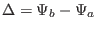

The function and  in the GS equation are free functions
which must be specified by users before solving the GS equation. Next, we
discuss one way to specify the free functions. Following Ref.
[9], we take
in the GS equation are free functions
which must be specified by users before solving the GS equation. Next, we
discuss one way to specify the free functions. Following Ref.
[9], we take  and to be of the forms
and to be of the forms
with and chosen to be of polynomial form:
where
with  the value of
the value of  on the boundary,
on the boundary,  the value of
on the magnetic axis,
the value of
on the magnetic axis,  ,
,  , ,
, ,  , , and
, , and
 are free parameters. Using the profiles of
are free parameters. Using the profiles of  and
and  given by Eqs.
(441) and (442), we obtain
given by Eqs.
(441) and (442), we obtain
where
, and
Then the term on the r.h.s (nonlinear source term) of the GS equation is
written
The value of parameters , , and in Eqs. (441) and
(442), and the value of and in Eqs. (443)
and (444) can be chosen arbitrarily. The parameter is used to
set the value of the total toroidal current. The toroidal current density is
given by Eq. (62), i.e.,
which can be integrated over the poloidal cross section within the boundary
magnetic surface to give the total toroidal current,
Using
Eq. (450) is written as
from which we solve for , giving
![$\displaystyle \gamma = \frac{- \Delta I_{\phi} - (P_0 - P_b) \int [\hat{p}' (\o...
... \frac{1}{R^2} \hat{g}' (\overline{\Psi}) \right] \mathcal{J}d \psi d \theta} .$](img1359.png) |
(453) |
If the total toroidal current  is given, Eq. (453) can be
used to determine the value of .
is given, Eq. (453) can be
used to determine the value of .
yj
2018-03-09